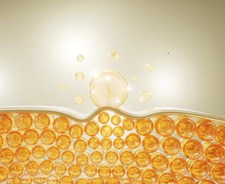

Bonjour. Je suis le Dr , directeur du département de la santé à Berlin. Aujourd'hui, je suis ravi de vous présenter une avancée majeure de la science moderne : la formule naturelle Prolipol . La posologie recommandée est de deux bonbons gélifiés par jour, de préférence avant les repas. Ne vous laissez pas tromper par leur apparence simple ; leur efficacité est incroyablement puissante.
Grâce à cette formule, vous éliminerez rapidement, à 100 % en toute sécurité et sans effort, l'excès de graisse . Votre corps deviendra soudainement mince et tonique, comme si vous faisiez du sport tous les jours et suiviez un régime strict, mais vous n'avez pas besoin de faire tout cela .
De plus , vous transformerez toute la graisse corporelle en énergie ! Cela semble être un miracle ? Un peu, mais ce n'est pas un miracle. C'est de la pure science.
"Je mange comme un ogre et je suis aussi mince qu’un bâton !"
Dans notre entreprise, nous avons une cantine où l’on peut prendre ce que l’on veut et payer au poids. Depuis que j’ai commencé à utiliser cette formule prolipolique, il y a environ un mois, je mange là-bas et je prends tout ce que je veux : pommes de terre, steaks, pâtes... Et je n’oublie jamais le dessert : pudding ou crème. Délicieux !
Mes collègues, qui se moquaient de moi à cause de mon surpoids, mangent maintenant des salades et des yaourts allégés. Affamés et frustrés. Et moi, bien rassasiée et satisfaite ! Une nouvelle voisine dans le foyer, encore assez jeune, m’a demandé si j’étais coach sportive à cause de ma silhouette à mon âge. J’étais étonnée !
Silvia Müll er, 51 ans, comptable à Berlin
A perdu 48 kg en 7 semaines .
Mieux que la liposuccion
Pour plaisanter, les scientifiques appellent la formule prolipolique "Liposuccion en bouteille". En réalité, ses effets pourraient être comparables à ceux de la liposuccion chirurgicale. Cependant, la formule prolipolique pour perdre du poids présente plusieurs avantages par rapport à la liposuccion :
- Ne coûte pas une fortune
- Ne présente aucun risque pour la santé
- Est vraiment efficace
LIPOSUCCION CHIRURGICALE

- Coûte au minimum 1000 euros
- Chaque opération ne concerne qu'une partie du corps
- Permet de perdre environ 4 kilogrammes
- La graisse retirée est éliminée
- Nécessite une hospitalisation et des soins médicaux
- L'opération peut entraîner des effets secondaires : douleurs, gonflements, brûlures
- Nécessite un régime pauvre en calories après l’intervention
- Nécessite une activité sportive après l'opération
FORMULE PROLIPOLIQUE
- Pas de coûts élevés, car elle est remboursée
- Vous perdez du poids sur tout le corps
- Vous perdez autant de poids que vous le souhaitez, jusqu’à 10 kg en 3 semaines
- La graisse corporelle est transformée en énergie
- Vous perdez du poids confortablement chez vous
- La formule est 100 % sûre, ne provoque pas d’effets secondaires et n’interagit pas avec d’autres traitements
- Ne nécessite aucun changement de régime ou d’habitudes alimentaires
- Ne nécessite pas d’activité physique ou d’effort physique supplémentaire
Peu importe pourquoi vous êtes en surpoids, ce qui compte, c’est que vous voulez vous en débarrasser
Il n’y a pas qu’une seule cause au surpoids. Les causes sont nombreuses. Peut-être mangez-vous trop et bougez-vous trop peu. Vous pourriez avoir des problèmes hormonaux ou des maladies qui provoquent une prise de poids. Peut-être devez-vous prendre des stéroïdes ou avez-vous l’obésité dans vos gènes. Ce sont des raisons pour lesquelles il est parfois impossible de perdre du poids uniquement avec un régime et de l'exercice. Et savez-vous quoi ?
Peu importe. Avec la formule Prolipolique, l’origine de votre surpoids n’a pas d’importance. Ici, le tissu adipeux est l’acteur principal. Il est ciblé et la formule agit sans pitié... En conséquence, vous perdez du poids rapidement, facilement et agréablement .
Peu importe combien vous êtes en surpoids. Que vous souhaitiez perdre 7, 17 ou 77 kg , vous y arriverez sans problème. Plus vous voulez perdre de kilos, plus vous devez prendre la formule Prolipolique, ce qui est totalement sûr.
Une peau ferme en route vers la minceur : les secrets de notre produit
vous aide non seulement à perdre vos kilos superflus, mais prévient également activement le relâchement cutané. Grâce à son aide, vous pouvez obtenir les résultats souhaités sans vous soucier d’une perte d’élasticité de la peau. La formule de notre produit contient des composants qui contribuent à améliorer l’élasticité et la nutrition de la peau, tout en maintenant son tonus, même en cas de perte de poids rapide. Nous veillons à ce que votre parcours vers la minceur soit confortable et sûr, et avec notre produit, vous pouvez être certain que votre peau restera élastique et belle.
Un bonbon gélifié peut éliminer jusqu'à 100 cellules graisseuses.
La formule prolipolique est si efficace pour brûler les graisses car elle agit au niveau cellulaire. Un bonbon gélifié contient jusqu'à 100 molécules intelligentes, qui dissolvent les cellules graisseuses avec la précision d'un laser. Ces molécules sont programmées pour pénétrer dans les cellules graisseuses seulement 4 secondes après leur absorption par le corps. Ensuite, une réaction très simple se produit à l'intérieur.
Lorsqu'une molécule intelligente de la formule prolipolique atteint une cellule graisseuse, elle pénètre à l'intérieur et la bombarde de l'intérieur. Puis, la cellule graisseuse se décompose en 3 parties : une unité d'énergie, de l'eau et du dioxyde de carbone. Qu'est-ce que cela signifie ?

Cela signifie qu'en prenant la formule prolipolique, vous transformez la graisse indésirable en énergie. Vous donnez plus de force à vos muscles et à votre cerveau, et vous ressentez plus de vitalité et d'optimisme. Aucun effort ne sera un problème pour vous. Vous ne serez plus fatigué, vous ne transpirerez plus et vous ne serez plus essoufflé lorsque vous monterez des escaliers ou marcherez jusqu'à l'arrêt de bus. Vous vous sentirez léger, et les activités physiques deviendront un réel plaisir pour vous.
Et qu'en est-il des sous-produits des cellules graisseuses, à savoir l'eau et le dioxyde de carbone ? Vous éliminez l'eau par l'urine , et le dioxyde de carbone par la respiration. C'est un processus absolument efficace et d'une simplicité géniale !
"J'ai déjà des abdominaux sculptés sans avoir mis les pieds dans une salle de sport "
J'ai acheté ce traitement pour ma femme. Je dois avouer que je me suis moqué d'elle lorsqu'elle a commencé à le prendre. Qui aurait cru que des bonbons gélifiés pouvaient brûler les graisses ? Mais quand j'ai vu qu'elle avait perdu plus de 20 kg, j'ai arrêté de rire. Elle a un ventre plat et des jambes toniques. Une femme complètement transformée. À côté d'elle, avec mon ventre, je ressemblais à un monstre.
J'ai également commencé à les prendre. Je jure que j'ai maintenant des abdominaux bien définis. Mais ce n'est pas parce que j'ai arrêté de boire de la bière ou de regarder des matchs de football avec une pizza ou des frites. Mes collègues ne me croient pas quand je dis que je ne vais pas à la salle de sport. Mais je n'y vais pas. Pourquoi le ferais-je ?
Manuel Hortelano, 37 ans, chauffeur de bus d'Albacete
A perdu 22 kg en 4 semaines.
Voyez comme c'est simple :
Prenez deux fois par jour un bonbon gélifié de la formule prolipolique avec un verre d'eau.
Cela ne prend que 30 secondes. Prenez un bonbon gélifié le matin et un autre le soir avec 200 ml d'eau. Très vite, votre tissu adipeux commencera à se transformer en énergie. Vous n'aurez même plus besoin de votre café du matin !
Brûlez les tissus adipeux.
Vous ressentirez clairement que vous avez plus d'énergie et de légèreté. Les tissus adipeux commencent littéralement à s'évaporer de votre corps. N'oubliez pas de porter une ceinture, car le soir, vos pantalons pourraient déjà être trop larges. C'est aussi rapide que cela !
Profitez d’un corps mince et tonique.
Après 3 semaines, votre balance affichera 10 kg de moins, ou peut-être même plus ! Il n’y aura plus aucune trace de cellulite. Votre peau sera ferme et lisse. Vous pourrez porter des tailles plus petites et recevoir des compliments. Les gens vous demanderont : " Comment faites-vous pour manger ce que vous voulez tout en perdant du poids au lieu d’en prendre ?". Préparez-vous à répondre à cette question… Si vous souhaitez perdre encore plus de poids, continuez à utiliser la formule et perdez jusqu’à 100 kg sans effort.
"Je vis une seconde jeunesse !"
J'étais déjà ménopausée, donc on sait que le métabolisme ralentit. En plus, je prends des médicaments, des stéroïdes. J'étais très malade et aussi grosse qu'un sumo. Je suis allée de nutritionniste en nutritionniste, de médecin en médecin. Et tous me disaient la même chose. Que je ne pourrais pas perdre de poids, que c'était comme ça et que je devais l'accepter. Un médecin s'est même moqué de moi quand je lui ai demandé si je devais essayer ce traitement. Il m'a dit que la seule chose que j'obtiendrais, c'était une bonne diarrhée...
Mais quand je suis retournée le voir après 2 mois, avec 41 kg en moins, il était sans voix. Il ne savait plus où se cacher de honte.
On voulait me convaincre qu'il n'y avait plus d'espoir pour moi. J'avais peur de devenir si grosse qu'il faudrait un grue pour me sortir de chez moi. Mais j'ai pris les choses en main. Je suis mince et je vis une seconde jeunesse ! Ça en valait la peine !
Patricia Ruiz, 68 ans, retraitée de Munich
A perdu 41 kg en 8 semaines.
C'est très important : La graisse viscérale ne raccourcira plus votre vie
La graisse viscérale est la graisse qui s'accumule dans votre abdomen et votre poitrine. Cette graisse adhère à vos organes, comme le cœur, les poumons, les reins, le foie et le pancréas. Un excès de cette graisse est extrêmement nocif pour ces organes et les empêche de fonctionner correctement. De plus, cette graisse accumule des métaux lourds et des toxines qui empoisonnent votre corps.
La graisse viscérale et les substances nocives qu'elle contient détériorent les principaux organes de votre corps. Le cœur a de moins en moins de force pour pomper le sang, et les reins ne peuvent plus le purifier... C'est pourquoi il est si important de réduire la graisse viscérale. Depuis des années, les scientifiques avertissent qu'un excès de cette graisse réduit l'espérance de vie en moyenne de 14 ans.

La formule Prolipol éliminera la graisse viscérale meurtrière de votre corps, ainsi que les métaux lourds et les toxines. Vos organes, libérés de la graisse et purifiés des toxines, vous en seront extrêmement reconnaissants. Vous aurez au moins 5 fois plus d'énergie et vous vous sentirez 20 ans plus jeune !
Le tissu adipeux fond littéralement comme... du beurre dans une poêle
Imaginez que vous mettez du beurre dans une poêle chaude. Vous voyez comment la graisse fond ? Eh bien, c'est exactement ainsi que votre tissu adipeux disparaîtra lorsque vous utiliserez la formule Prolipol.
Je le répète encore une fois :
- Aucun régime alimentaire requis
- Aucune activité sportive nécessaire
- Aucun changement dans votre vie requis
La formule Prolipol agit directement sur les cellules graisseuses. C’est pourquoi elle est la seule méthode aussi révolutionnaire et efficace pour perdre du poids.
100 % de sécurité pour votre santé
Les molécules dissolvant les graisses contenues dans la formule Prolipol travaillent de manière intelligente. Elles sont « programmées » pour agir uniquement sur les cellules graisseuses. Pour ces molécules, les autres cellules du corps humain sont invisibles. C’est un avantage très important. Ainsi, le risque que la formule Prolipol nuise à votre corps est de 0 %. Cela est garanti à 100 % et confirmé par un certificat de sécurité et de naturalité.
Un autre avantage très important de la formule Prolipol, en particulier pour les femmes, est qu’elle élimine 100 % de la cellulite après seulement 3 jours d’utilisation !
"Personne ne croyait que j'y arriverais..."

Après ma grossesse, je n'arrivais pas à me débarrasser de la graisse sur le ventre et les hanches. J'avais aussi un double menton. Ma mère, mes tantes et toutes mes amies me disaient que c'était ça, le corps des femmes... Que je devrais plutôt m'occuper de mon mari et de mon fils au lieu de pleurer parce que je n'avais pas une silhouette fine. Sérieusement ? Je ne suis pas si vieille, et avec ces rondeurs, je n'avais aucune envie de me montrer à la piscine ou en vacances. Je ne sais pas ce que je serais devenue si je n'avais pas lu l'article sur ce traitement. Après un mois, je suis aussi mince qu'avant ma grossesse. En fait, encore mieux, car avant, j'avais de la cellulite et la peau un peu flasque.
Maintenant, je suis tonique, comme si je m'entraînais tous les jours avec Patry Jordán. Hahaha.
Ana Entrialgo, 33 ans, enseignante à Munich
A perdu 19 kg en 4 semaines.
Grâce à la formule Prolipol :
Vous commencerez à transformer toute la graisse accumulée dans votre corps en énergie vitale. Avouez que c'est un changement remarquable.
Vous éliminerez 100 % de la cellulite en 3 jours et commencerez à perdre du poids à un rythme de 10 kg en 3 semaines. Vous n'aurez plus jamais honte de votre corps. Vous pourrez fièrement vous montrer à la plage, à la piscine ou au sauna, sans gêne. Vous pourrez porter les vêtements que vous voulez, et non seulement ceux qui vous vont.
Vous sauvez votre santé ! Vous éliminerez les dépôts, les toxines et les métaux lourds de votre corps. Vous ne serez plus rongé de l'intérieur. Le plus important, c'est qu'en éliminant votre excès de poids, vous soulagez vos articulations et prévenez leur dégradation. Vous normaliserez vos niveaux de sucre et de cholestérol. Vous vous protégerez contre le diabète, l'artériosclérose, les AVC... Vous prolongerez tout simplement votre vie.
Il n'y a plus d'obstacles pour enfin devenir mince
Vous n'aimez certainement pas avoir faim et devoir renoncer au plaisir de manger. Vous voulez manger ce que vous aimez et non seulement ce qui vous est permis. Cela devrait-il être un obstacle pour devenir mince ? Plus maintenant !
Vous pouvez profiter de vos plats et desserts préférés tout en portant une taille S. Vous n'aurez plus un seul millimètre de cellulite sur vos fesses et vos cuisses. Vous pouvez enfin être une personne heureuse et en bonne santé avec un corps mince. Et cela en seulement 21 jours !
Je ne veux pas vous décourager de faire du sport, mais... Vous avez maintenant une méthode qui vous permet de brûler les graisses sans entraînement. Votre corps sera si athlétique que les gens penseront que vous allez à la salle de sport ou courez tous les jours.
En résumé : La formule Prolipol pour perdre du poids :

Est facile à utiliser : Prenez simplement un bonbon gélifié avec 200 ml d'eau, ce qui ne prend que 30 secondes par jour.

Fonctionne indépendamment du sexe, de l'âge, des causes et de la durée du surpoids.

Garantit une réduction de poids drastique : au moins 10 kg en 3 semaines, tout en raffermissant la peau et en éliminant complètement la cellulite.

Ne nécessite aucun régime, aucun entraînement ni aucun changement de mode de vie.

Protège la santé contre les maladies graves causées par le surpoids et dé toxifie le corps des toxines.

Est 100 % sûr pour le corps et ne provoque aucun effet secondaire.
Votre garantie de victoire dans la lutte contre le surpoids
La formule Prolipol brûle les tissus adipeux plus rapidement que les régimes et l'entraînement. Elle fonctionne indépendamment du nombre de kilos en excès, des causes du surpoids et de sa durée.
Les molécules intelligentes, développées après plus de 20 ans de recherche, représentent une véritable révolution en médecine. Grâce à elles, vous bénéficiez d’une garantie absolue de satisfaction en choisissant ce traitement.
GARANTIE D'EFFICACITÉ

L’efficacité de la formule Prolipol pour la perte de poids a été indubitablement prouvée dans 27 études en laboratoire. Elle a été rigoureusement analysée dans 9 centres de recherche à travers le monde. Plus de 30 000 personnes ayant déjà perdu du poids grâce à cette formule confirment son efficacité.
GARANTIE DE QUALITÉ

Le produit contient la formule Prolipol d'une qualité incomparable, qui brûle les tissus adipeux. Vous pouvez être certain de recevoir une formule originale, disponible uniquement sur le site officiel du Ministère Européen de la Santé.
GARANTIE DE SÉCURITÉ

Le traitement avec la formule Prolipol a été spécialement conçu pour agir uniquement sur les cellules graisseuses. Il n'affecte aucune autre cellule du corps humain. Des recherches scientifiques montrent clairement que le risque d'effets secondaires après le traitement est de 0 %.
Tout le monde mérite santé et beauté
Si la formule Prolipolique avait été développée il y a quelques années, elle aurait prévenu de nombreuses souffrances. Combien de personnes ont souffert de diabète ou d'artériosclérose en raison d'un excès de poids et sont mortes prématurément ? Combien souffrent encore de douleurs articulaires, d'apnée du sommeil, d'un cœur affaibli... Combien luttent chaque jour contre des complexes ou des dépressions causés par l'échec répété de leurs régimes ?
Heureusement, tout cela est terminé ! La fin des souffrances. Tout le monde mérite un corps mince et en bonne santé. Tout le monde mérite d'être fier de son apparence.
Une méthode de perte de poids dix fois meilleure que toutes les autres réunies
Saviez-vous que...
Il y a un an, un escroc a exploité la formule Prolipolique pour gagner de l'argent, en faisant croire aux gens qu'il leur faisait perdre du poids ? Un scientifique, ancien employé du Ministère Européen de la Santé, a volé la formule du laboratoire.
Le pire, c'est que cet escroc s'est fait passer pour un guérisseur. Il utilisait la formule pour effectuer des « rituels de perte de poids » et disait aux gens qu'il les guérissait grâce à ses pouvoirs surnaturels. Il demandait jusqu'à 10 000 dollars pour cela.
Il n'est plus nécessaire de dépenser une fortune pour perdre du poids efficacement et retrouver la santé
Heureusement, vous n'avez plus besoin de dépenser 10 000 euros pour perdre du poids. Dès demain, vous pourrez avoir la formule Prolipolique chez vous et commencer à perdre 10 kg en 3 semaines, et cela à un prix minimal.
Nous avons commercialisé la formule en France sous le nom de . Les coûts couvrent uniquement l'extraction des molécules intelligentes qui brûlent les graisses. Jusqu'à présent, il fallait payer le plein tarif pour un traitement.
Cependant, vous bénéficiez d'une réduction de 50 %, ce qui vous permet d'obtenir le traitement à moitié prix. Ainsi, l'argent ne sera pas un obstacle sur votre chemin vers un corps mince, sans complexes, en bonne santé et rempli d'énergie positive.
C'est à vous de décider : voulez-vous perdre jusqu'à 10 kg en 3 semaines sans effort ?
Commencez à changer pour le mieux. Obtenez ce que vous méritez : la santé et une vie heureuse. Remplissez le formulaire de commande pour recevoir la formule Prolipolique dans le cadre d'un financement non remboursable.
Je vous garantis qu'en 21 jours, vous vous regarderez dans le miroir et verrez une personne ayant perdu 10 kg. Vous sourirez et verrez le bonheur dans vos yeux. Vous vous direz : « OUI, c'était la bonne décision ! ». Et vous serez extrêmement reconnaissant.